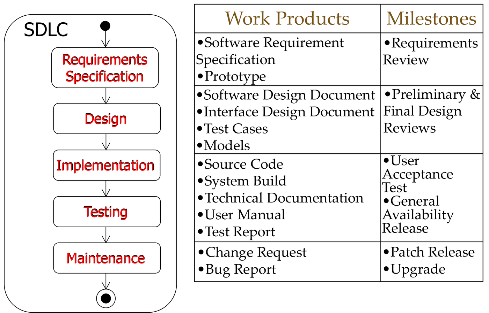
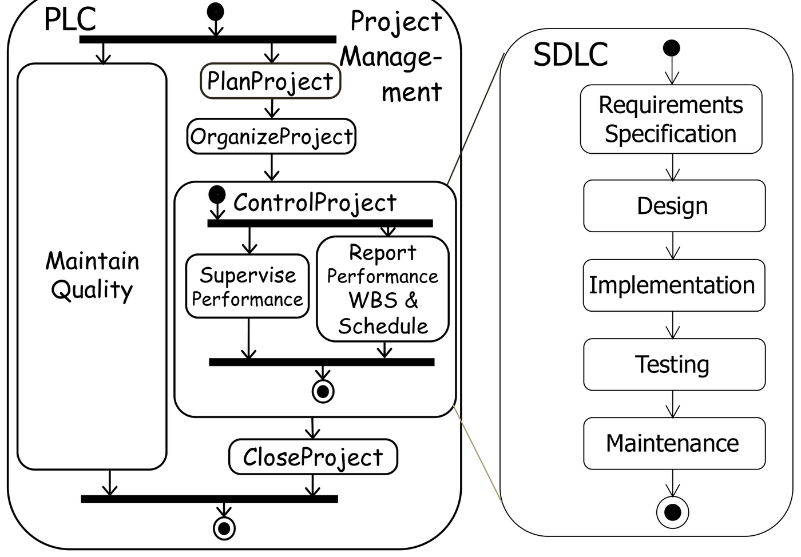
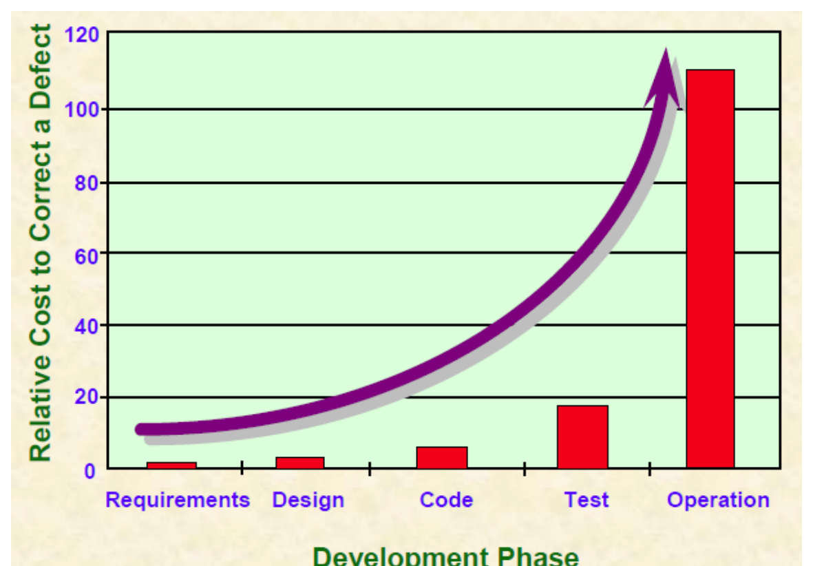

In the early decades of computing, software development was treated as an informal, ad-hoc programming craft. As computer systems scaled in complexity, projects routinely suffered from catastrophic budget overruns, missed deadlines, unmaintainable codebases, and critical runtime failures—a phenomenon termed the Software Crisis.
Software Engineering emerged to transform software creation into a rigorous engineering discipline:
Software Engineering: The systematic, disciplined, and quantifiable approach to the production and maintenance of fault-free, maintainable software that fully satisfies user requirements, delivered on time and within budget.
1. The Software Development Life Cycle (SDLC)
The technical process of building software is decomposed into five sequential or iterative phases comprising the Software Development Life Cycle (SDLC). Each phase consumes inputs, produces formal work products (deliverables), and terminates at a verifiable milestone:

| SDLC Phase | Primary Objective | Key Work Products (Deliverables) | Exit Milestone |
|---|---|---|---|
| Requirements Engineering | Establish what the system must do without committing to how. Discover constraints, business rules, and domain entities. | Software Requirements Specification (SRS), Use Case Models, Data Dictionary, Low-fidelity Prototypes. | Requirements Baseline Review (Formal client sign-off). |
| System & Software Design | Specify how the system will be constructed. Define high-level architecture, module decomposition, and data structures. | Architectural Design Document (ADD), Detailed Class Diagrams, Sequence Diagrams, Test Plans & Test Cases. | Design Review (Architectural sign-off). |
| Implementation (Coding) | Translate design artifacts into clean, compilable, executable source code. | Source code files, Unit test suites, Build scripts, Code documentation. | Code Inspection / Unit Test Completion. |
| Testing & Integration | Verify that modules integrate properly and validate that the complete system conforms to the SRS. | Integration Test Reports, System Test Execution Logs, Defect Tracking Records. | User Acceptance Test (UAT) Sign-off. |
| Maintenance & Evolution | Support production operations, correct emergent defects, adapt to environmental shifts, and enhance features. | Patch Releases, Change Request (CR) Logs, Regression Test Suites. | Product Retirement / Sunset. |
[!IMPORTANT] Test Cases are Authored in the Design Phase: A frequent examination trap assumes test cases are written after code is implemented. In disciplined software engineering, test cases and test plans are authored during the Design Phase directly from requirements and architectural specifications, before a single line of production code is written.
2. Project Life Cycle (PLC) vs. SDLC
Software engineering projects require two synchronized operational tracks: technical execution and management oversight.

| Operational Dimension | Software Development Life Cycle (SDLC) | Project Life Cycle (PLC) |
|---|---|---|
| Domain | Technical Engineering Track | Managerial & Governance Track |
| Core Activities | Requirements, Design, Implementation, Verification, Maintenance. | Initiating, Planning, Organizing, Controlling, Closing. |
| Primary Actors | System Architects, Software Developers, QA Engineers. | Project Managers, Scrum Masters, Product Owners, Sponsors. |
| Primary Goal | Deliver a technically robust, functioning software system. | Ensure delivery within cost, time, scope, and resource constraints. |
| Interaction | Executed within the operational framework established by the PLC. | Runs continuously around the SDLC from project conception to decommissioning. |
3. The Economics of Software Defects (Cost of Late Faults)
One of the foundational economic laws of software engineering, established empirically by Barry Boehm, is that the cost of detecting and repairing a software defect escalates non-linearly across successive SDLC phases:

| Phase Where Fault is Repaired | Relative Cost Factor | Engineering Justification for Escalation |
|---|---|---|
| Requirements Phase | Simple text edit in the SRS document; zero downstream rework. | |
| Design Phase | Modifying architectural models, component interfaces, and class diagrams. | |
| Implementation Phase | Refactoring source code, modifying unit tests, and rebuilding local binaries. | |
| Testing Phase | Logging formal defect reports, triaging bugs, re-integrating modules, re-running regression test suites. | |
| Operations (Post-Release) | Emergency patch development, customer hotfixes, field data migration, liability, reputation damage, and complete regression cycles. |
The “Shift-Left” Testing Principle
Because post-release defects cost two orders of magnitude more than requirement-phase defects, modern software methodologies practice “Shift-Left”: moving verification, validation, and testing activities to the earliest feasible phases of the lifecycle. Techniques including requirements reviews, model checking, and Test-Driven Development (TDD) aim to intercept defects while the cost of correction remains near .
4. Inherent Complexities: Software vs. Hardware
Software exhibits fundamental characteristics that distinguish it from physical hardware and traditional engineering disciplines:
| Dimension | Physical Hardware Engineering | Software Engineering |
|---|---|---|
| Wear & Degradation | Follows the physical Bathtub Curve: physical components wear out from friction, fatigue, and environmental stress. | Does not wear out physically. Failures are caused by latent design/logic faults or environmental divergence (software entropy). |
| Manufacturing | Expensive mass replication; quality control relies on statistical process monitoring of physical materials. | Negligible replication cost (bit copy). The challenge lies entirely in design and intellectual synthesis. |
| Malleability | Rigid and expensive to change once fabrication masks/dies are printed. | Infinitely malleable; easy to alter text files, creating a false illusion that late-stage architectural changes are cheap. |
| Complexity Growth | Limited by physical geometry and spatial constraints. | Unbounded logical state space. A program twice as large typically exhibits four times as many latent defects (). |